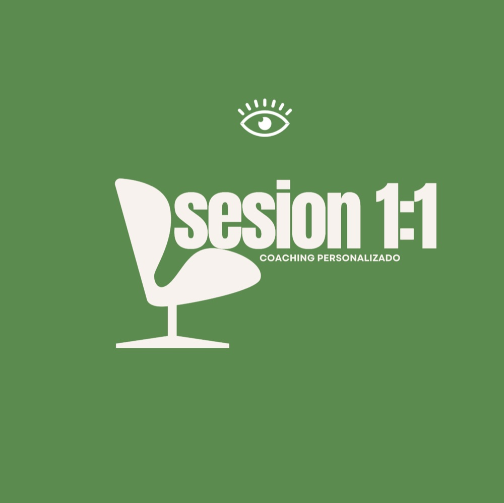

Coaching de vida
Sesiones personalizadas 1:1
Desbloqueo y claridad
Un espacio exclusivo de acompañamiento online diseñado para identificar los cambios que precisas y trazar un plan de acción real.
Con el respaldo de mis 30 años de trayectoria, trabajamos en tu mentalidad y estrategia para que dejes de apagar fuegos y empieces a liderar tu vida con total seguridad. Obtén una hoja de ruta personalizada que transforma la incertidumbre en resultados tangibles. Ideal para profesionales que buscan equilibrio y eficacia. Recupera hoy tu tiempo y tu propósito con un método directo y humano.
Reservar entrevista gratuitaTu proceso es único y tus desafíos tienen solución
Aunque cada persona que se sienta frente a mí vive una realidad distinta, mi trayectoria me ha permitido identificar ciertos patrones de bloqueo que se repiten en la mayoría de los profesionales y líderes. Mi metodología se adapta 100 % a tu ritmo, pero aquí te comparto los pilares que, con frecuencia, transformamos en nuestras sesiones para que recuperes tu equilibrio:
- 01Claridad y dirección: dejamos de caminar entre la niebla para definir objetivos concretos y un plan de acción real.
- 02Mentalidad flexible: entrenamos la apertura mental para que dejes de ver obstáculos y empieces a encontrar oportunidades en el cambio.
- 03Coherencia vital: alineamos lo que piensas, lo que sientes y lo que haces. Si no hay coherencia, hay agotamiento.
- 04El arte de la aceptación: aprendemos a aceptar lo que no podemos cambiar para enfocar toda tu energía en lo que sí está en tus manos.
- 05Gestión del merecimiento: trabajamos el «sí, soy capaz y me lo merezco», eliminando el síndrome del impostor que frena tu crecimiento.
- 06Resiliencia y reacción: no evitamos las caídas, pero sí acortamos el tiempo de recuperación, aprendiendo a levantarnos con más herramientas.
- 07Motivación consciente: reconectamos con tu «para qué» profundo para que tu motor no dependa de factores externos.
- 08Comunicación de impacto: mejoramos la forma en que te expresas contigo mismo y con los demás para evitar conflictos innecesarios.
- 09Auditoría de hábitos: revisamos tus rutinas diarias para eliminar aquellas que te roban energía y sustituirlas por hábitos que te nutren.
- 10Gestión del estrés: implementamos técnicas de relajación y regulación emocional para que el estrés deje de ser el protagonista de tu agenda.
Poner nombre a lo que te pasa es el primer paso para cambiarlo. Aunque estos temas son los cimientos del cambio, tu proceso será diseñado a tu medida, respetando tus tiempos y tus necesidades específicas. No hay dos caminos iguales porque no hay dos personas iguales.
¿Qué pasa después de las sesiones?
Estas sesiones construyen los cimientos de tu cambio, y puedes solicitarlas en un pack indivisible y nominal para conseguir un descuento. Se desarrollan al ritmo de una sesión por semana al principio del proceso (la continuidad en este momento es un factor de éxito en el resultado). Sin embargo, la maestría en autoestima, confianza y liderazgo es un camino de fondo.
Una vez finalizada la fase de consolidación, puedes continuar con las sesiones de mantenimiento.
- 01Evita el retroceso: el mantenimiento estratégico asegura que no vuelvas a viejos patrones ante situaciones de estrés.
- 02Profundiza en tu éxito: si tu evolución lo requiere, puedes adquirir nuevos bonos de sesiones para seguir escalando tus resultados.
- 03Liderazgo permanente: el objetivo es que tu transformación no sea un pico de motivación, sino tu nueva identidad.
El cambio real no termina, se integra. Tú decides el ritmo; yo te acompaño en la excelencia.
Reservar entrevista gratuita